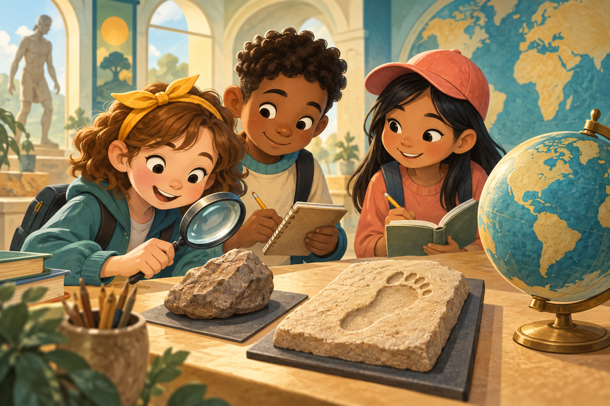

You’ve explored the clues!
Our family story has many branches. We still have plenty to discover. Which mystery would you investigate next?
Follow footprints, inspect a stone tool and meet our ancient relatives. Eighteen real discoveries, six adventures and a storyteller to guide you.
Read it, hear it, explore it. No scores. Just curiosity.

Three discoveries in each journey. Take your time, listen, and follow the questions.
Our family story has many branches. We still have plenty to discover. Which mystery would you investigate next?